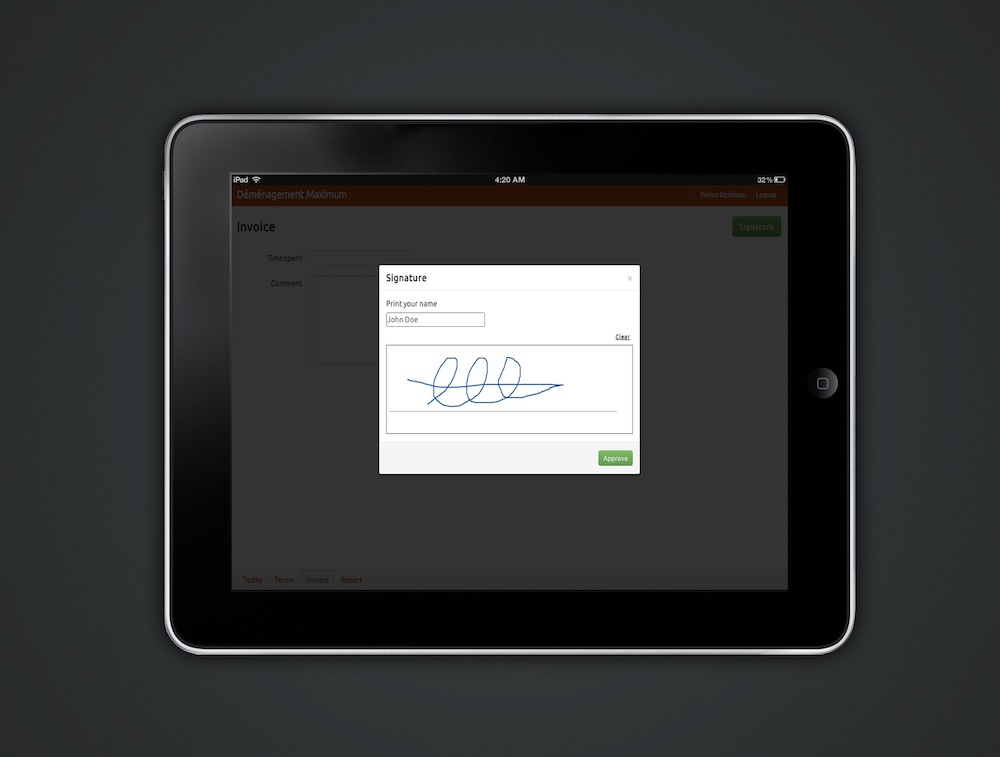

Collect signature on iPad
Currently working on a new web-based application involving mobility and invoicing, therefore requiring client's approval on site. Using the jQuery plugin Signature pad from Thomas Bradley (Ottawa based as well) to draw signature on the iPad and RoR as backend.
Here is a preview. At this point user will hand over the iPad to the client so the intent is to focus on just one thing, getting the signature. This explains the use of modal window.
We're building a web-based application to manage removal, quotes, invoices, trucks and supplies. See mockups in previous post.
]